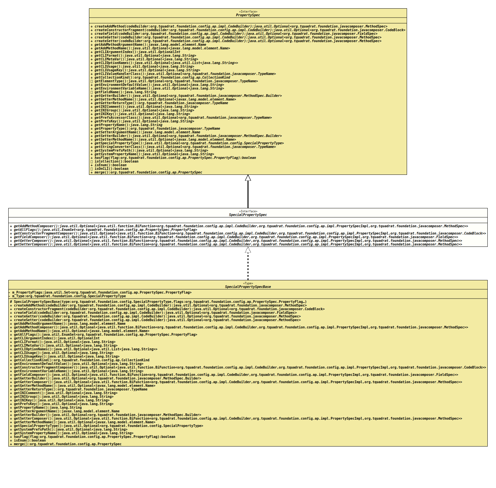

Interface SpecialPropertySpec
- All Superinterfaces:
PropertySpec
- All Known Implementing Classes:
CharsetProperty,ClockProperty,LocaleProperty,MessagePrefixProperty,ProcessIdProperty,RandomProperty,ResourceBundleProperty,SessionKeyProperty,SpecialPropertySpecBase,TimeZoneProperty
@ClassVersion(sourceVersion="$Id: SpecialPropertySpec.java 1001 2022-01-29 16:42:15Z tquadrat $")
@API(status=STABLE,
since="0.1.0")
public interface SpecialPropertySpec
extends PropertySpec
The specification for special properties.
- Author:
- Thomas Thrien (thomas.thrien@tquadrat.org)
- Version:
- $Id: SpecialPropertySpec.java 1001 2022-01-29 16:42:15Z tquadrat $
- Since:
- 0.1.0
- UML Diagram
-

UML Diagram for "org.tquadrat.foundation.config.ap.impl.SpecialPropertySpec"
{kind=link}
-
Nested Class Summary
Nested classes/interfaces inherited from interface org.tquadrat.foundation.config.ap.PropertySpec
PropertySpec.PropertyFlag -
Method Summary
Modifier and TypeMethodDescriptionReturns the method that composes the 'add' method for the property.Returns all the flags that were set for this special property specification.Returns the method that composes the constructor fragment for the initialisation of the property.Returns the method that composes the field for the property.Returns the method that composes the getter for the property.Returns the method that composes the setter for the property.Methods inherited from interface org.tquadrat.foundation.config.ap.PropertySpec
createAddMethod, createConstructorFragment, createField, createGetter, createSetter, getAddMethodArgumentName, getAddMethodName, getCLIArgumentIndex, getCLIFormat, getCLIMetaVar, getCLIOptionNames, getCLIUsage, getCLIUsageKey, getCLIValueHandlerClass, getCollectionKind, getElementType, getEnvironmentDefaultValue, getEnvironmentVariableName, getFieldName, getGetterBuilder, getGetterMethodName, getGetterReturnType, getINIComment, getINIGroup, getINIKey, getPrefsAccessorClass, getPrefsKey, getPropertyName, getPropertyType, getSetterArgumentName, getSetterBuilder, getSetterMethodName, getSpecialPropertyType, getStringConverterClass, getSystemPrefsPath, getSystemPropertyName, hasFlag, isCollection, isEnum, isOnCLI, merge
-
Method Details
-
getAddMethodComposer
Returns the method that composes the 'add' method for the property.- Returns:
- An instance of
Optionalthat holds the 'add' method composer.
-
getAllFlags
Returns all the flags that were set for this special property specification.- Returns:
- The flags.
-
getConstructorFragmentComposer
Returns the method that composes the constructor fragment for the initialisation of the property.- Returns:
- An instance of
Optionalthat holds the composer for the constructor fragment.
-
getFieldComposer
Returns the method that composes the field for the property.- Returns:
- An instance of
Optionalthat holds the field composer.
-
getGetterComposer
Returns the method that composes the getter for the property.- Returns:
- An instance of
Optionalthat holds the getter composer.
-
getSetterComposer
Returns the method that composes the setter for the property.- Returns:
- An instance of
Optionalthat holds the setter composer.
-